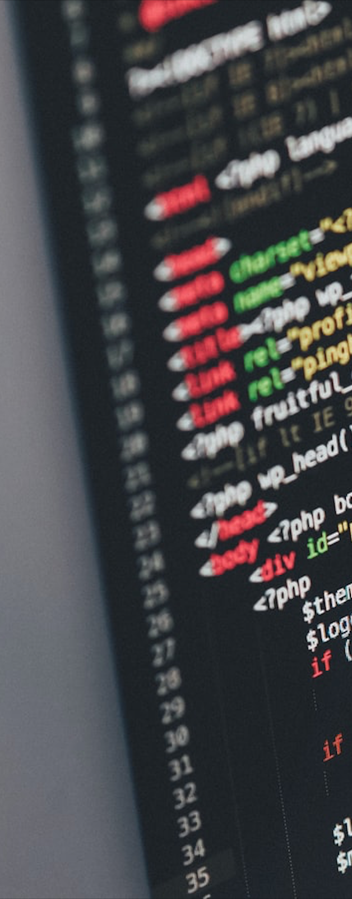
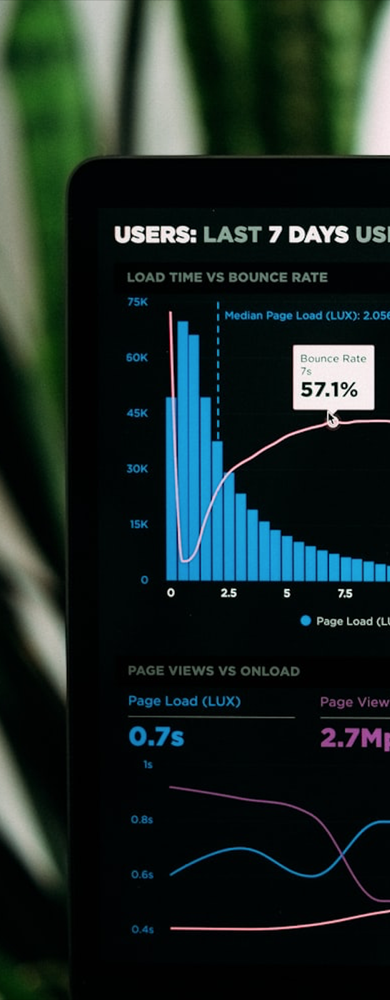
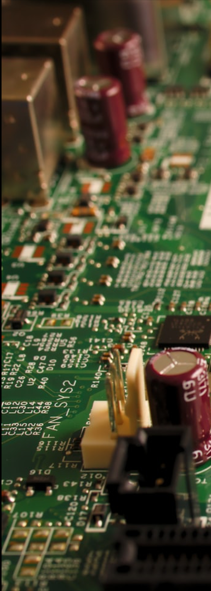

Project 1
Project 2
Project 3
Projects
The listed projects below have been completed. As for future plans, I hope to brush up on Python before working on another personal project, most likely using arduinos as well. To replace the current shiny app, I will also be analyzing another dataset relating to socioeconomic disparities in education.
Completed:- Project 1: This shiny app which presents and analyzes data visualtions on student alcohol consumption was a project completed by my group in Info 201. This was done primarily by using R and Shiny.
- Project 2: This was a pitch video by my group for Info 200. Our prototype app, ConneXion, was wireframed in Figma and was made to be a job finding app for freelancers.
- Project 3 - currently empty.